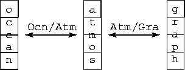

![[DBPP]](pictures//asm_color_tiny.gif)


![[Search]](pictures//search_motif.gif)

Figure 8.14: Communicators and intercommunicators in an earth system model.
Available processes are partitioned into three disjoint groups, each
with its own communicator used for internal communication.
Intercommunicators allow the atmosphere model to communicate with the
ocean model and graphics model.
We conclude by showing how the earth system model introduced in Chapter 2 can be constructed in a modular fashion by using MPI communicators. In particular, we consider a hypothetical model constructed as a parallel composition of atmosphere, ocean, and graphics components. The atmosphere and ocean models execute concurrently and exchange data periodically; in addition, the atmosphere model sends data periodically to the graphics component, which performs data reduction and rendering functions and outputs high-quality graphics. We allocate the same number of processes to each component; this approach is unlikely to be efficient in practice, but simplifies the presentation.
Program 8.9 implements this modular structure (Figure 8.14). The first two lines partition available processes into the three equal-sized, disjoint process groups that will be used to execute the three components. The code following the ``if'' statement establishes intercommunicators that link the atmosphere model with the ocean and graphics components, and initiates execution of the three components. Part of the ocean model code is shown also. This performs a reduction within the ocean model processes by using MPI_ALLREDUCE and the intracommunicator comm. Then, it exchanges data with corresponding processes in the atmosphere model by using the intercommunicator atm_ocn.
© Copyright 1995 by Ian Foster